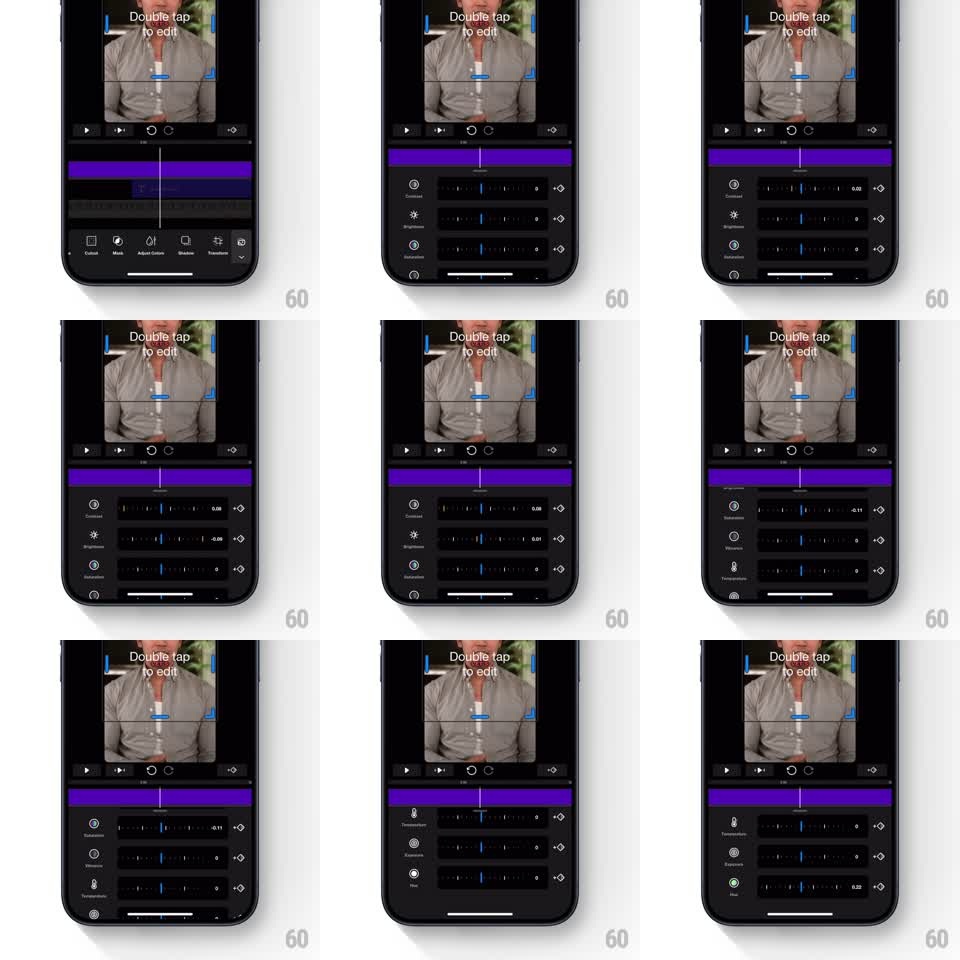

Media
Frame-by-frame

Rebuild this interaction 1:1: Riveo's video adjustment panel - an editor panel of horizontal dial sliders (Contrast, Brightness, Saturation, and more) that slide up over the toolbar, scrub precisely with tick feedback, and collapse away with a smooth slide.

Rebuild this interaction 1:1: Riveo's video adjustment panel - an editor panel of horizontal dial sliders (Contrast, Brightness, Saturation, and more) that slide up over the toolbar, scrub precisely with tick feedback, and collapse away with a smooth slide. ## Integration Integration: stack-agnostic spec - springs given as stiffness/damping, timed motions as duration + curve; map every value to your framework and animation library of choice. ## Scene Riveo's dark editor: video preview on top with a "Double tap to edit" overlay and crop handles, transport controls, and a purple timeline track. Tapping Adjust Colors opens a panel above the bottom toolbar: rows of labeled horizontal dial sliders (Contrast, Brightness, Saturation, Exposure, Vibrance, Temperature, Tint), each a track with tick marks, a colored position indicator, and a numeric readout at right. ## Motion spec Pattern: sliding adjustment panel with dial scrubbing, gesture-driven. - The panel slides up over the toolbar (spring stiffness 320 damping 26), slider rows staggering in 40ms apart. - Dragging a dial scrubs the value 1:1 with tick-level granularity; the indicator snaps to ticks with light resistance, the readout updates live, and the video preview adjusts in real time. - Flicks carry momentum (300ms decel) and settle on the nearest tick (spring stiffness 500 damping 28). - Scrolling the panel vertically reveals the next group of sliders (smooth scroll, rows keep their horizontal scrub independently). - Tapping the toolbar again collapses the panel: it slides down (250ms, ease-in) and the toolbar icons fade back. ## Calibration - Each dial's zero sits at center with negative values left, positive right; the readout formats to two decimals. - Only one control moves at a time - touching a dial locks the panel's vertical scroll. ## Reduced motion Panel fades in and out. ## Don't miss - The panel pushes the toolbar out of the way rather than covering it - a coordinated vertical slide. - The video preview never relayouts when the panel opens; only the lower half changes.